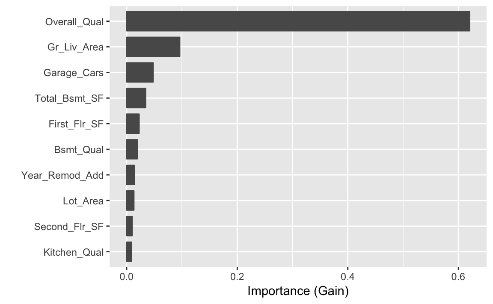

vignettes/pdp-example-xgboost.Rmd
pdp-example-xgboost.Rmd# Load required packages
library(xgboost) # for gradient boosted decision trees
library(pdp) # for partial dependence plots (PDPs)
library(vip) # for variable importance plots (VIPs)
# Load Ames housing data
ames <- AmesHousing::make_ames()In this vignette, we provide an example using a recently popular (and successful!) machine learning tool. XGBoost, short for eXtreme Gradient Boosting, is a popular library providing optimized distributed gradient boosting that is specifically designed to be highly efficient, flexible and portable. The associated R package xgboost (Chen et al. 2018) has been used to win a number of Kaggle competitions. It has been shown to be many times faster than the well-known gbm package (others 2017). However, unlike gbm, xgboost does not have built-in functions for constructing partial dependence plots (PDPs). Fortunately, the pdp package (Greenwell 2017) can be used to fill this gap.
For illustration, we’ll use the Ames housing data set (Cock 2011) made available with the AmesHousing package (Kuhn 2017); see ?AmesHousing::make_ames for details. The code chunk below uses xgb.cv() to tune an xgboost model using 5-fold cross-validation.
# Find the optimal number of rounds using 5-fold CV
set.seed(749) # for reproducibility
ames_xgb_cv <- xgboost::xgb.cv(
data = data.matrix(subset(ames, select = -Sale_Price)),
label = ames$Sale_Price, objective = "reg:linear", verbose = 0,
nrounds = 1000, max_depth = 5, eta = 0.1, gamma = 0, nfold = 5,
early_stopping_rounds = 30
)
print(ames_xgb_cv$best_iteration) # optimal number of trees
#> [1] 466The optimal model had a cross-validated RMSE of 2.247255510^{4} based on 466 rounds. The next snippet of code fits an xgboost model based on the optimal number of rounds and displays a variable importance plot (VIP) using the vip package (Greenwell and Boehmke, n.d.); see Figure 1.
# Fit an XGBoost model to the Boston housing data
set.seed(804) # for reproducibility
ames_xgb <- xgboost::xgboost(
data = data.matrix(subset(ames, select = -Sale_Price)),
label = ames$Sale_Price, objective = "reg:linear", verbose = 0,
nrounds = ames_xgb_cv$best_iteration, max_depth = 5, eta = 0.1, gamma = 0
)
# Variable importance plot
vip(ames_xgb, num_features = 10) # 10 is the default
It appears that the overall quality of the home (Overall_Qual) and the above grade (ground) living area in square feet (Gr_Liv_Area) are important features in predicting the selling price (Sale_Price). The next snippet of code constructs c-ICE curves and PDPs for Overall_Qual and Gr_Liv_Area. The results are displayed in Figure 2. Notice how we supply the original training data (without the response!) via the train argument in the call to partial(). This is not always encessary (e.g., when using partial() with models that store a copy of the training data with the fitted model object). The heterogenity in the ICE curves suggest the possible presence of interafction effects with these features. In general, we see a mononoic increasing relationship between each feature and Sale_Price. This is clear from the (centered) PDP (red curve) which can be obtained by averaging the ICE curves together.
# c-ICE curves and PDPs for Overall_Qual and Gr_Liv_Area
x <- data.matrix(subset(ames, select = -Sale_Price)) # training features
p1 <- partial(ames_xgb, pred.var = "Overall_Qual", ice = TRUE, center = TRUE,
plot = TRUE, rug = TRUE, alpha = 0.1, plot.engine = "ggplot2",
train = x)
p2 <- partial(ames_xgb, pred.var = "Gr_Liv_Area", ice = TRUE, center = TRUE,
plot = TRUE, rug = TRUE, alpha = 0.1, plot.engine = "ggplot2",
train = x)
p3 <- partial(ames_xgb, pred.var = c("Overall_Qual", "Gr_Liv_Area"),
plot = TRUE, chull = TRUE, plot.engine = "ggplot2", train = x)
# Figure 2
grid.arrange(p1, p2, p3, ncol = 3)Figure 2 c-ICE curves and PDPs for the two most important features in the Ames housing xgboost model.
Chen, Tianqi, Tong He, Michael Benesty, Vadim Khotilovich, Yuan Tang, Hyunsu Cho, Kailong Chen, et al. 2018. Xgboost: Extreme Gradient Boosting. https://CRAN.R-project.org/package=xgboost.
Cock, Dean De. 2011. “Ames, Iowa: Alternative to the Boston Housing Data as an End of Semester Regression Project.” Journal of Statistics Education 19 (3): 1–15. http://ww2.amstat.org/publications/jse/v19n3/decock.pdf.
Greenwell, Brandon, and Brad Boehmke. n.d. Vip: Variable Importance Plots. https://koalaverse.github.io/vip/index.html.
Greenwell, Brandon M. 2017. “Pdp: An R Package for Constructing Partial Dependence Plots.” The R Journal 9 (1): 421–36. https://journal.r-project.org/archive/2017/RJ-2017-016/index.html.
Kuhn, Max. 2017. AmesHousing: The Ames Iowa Housing Data. https://CRAN.R-project.org/package=AmesHousing.
others, Greg Ridgeway with contributions from. 2017. Gbm: Generalized Boosted Regression Models. https://CRAN.R-project.org/package=gbm.